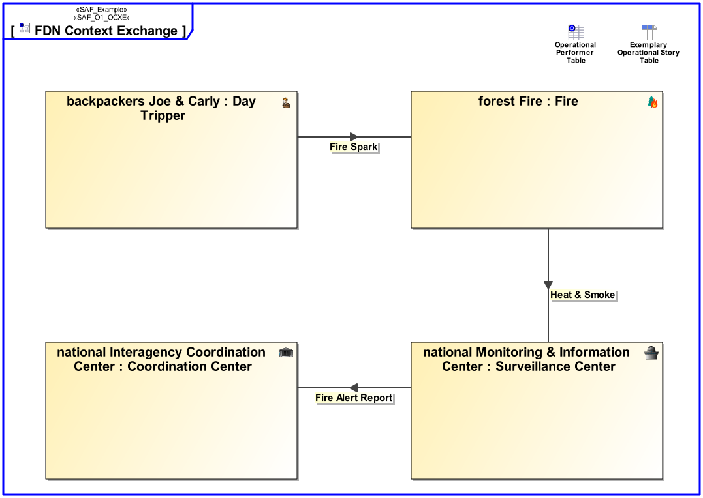

O1_OCXE Operational Context Exchange Viewpoint
| Domain | Aspect | Maturity |
|---|---|---|
| Operational | Context & Exchange |

The Operational Context Exchange Viewpoint provides the operational exchange of systems, personnel, information, material, energy, etc. between operational performers.
The Operational Context Exchange Viewpoint supports the “Business or Mission Analysis Process” activities of the INCOSE SYSTEMS ENGINEERING HANDBOOK 2023 [§2.3.5.1] and contributes to both the problem or opportunity statement, and the Major Stakeholder Identification.
An internal block diagram (IBD) - associated to the operational context - featuring the interconnected operational performers in their respective operational role, and the operational item exchange per operational connection.
A tabular format listing [tbd].
The following Stereotypes / Model Elements are used in the Viewpoint: